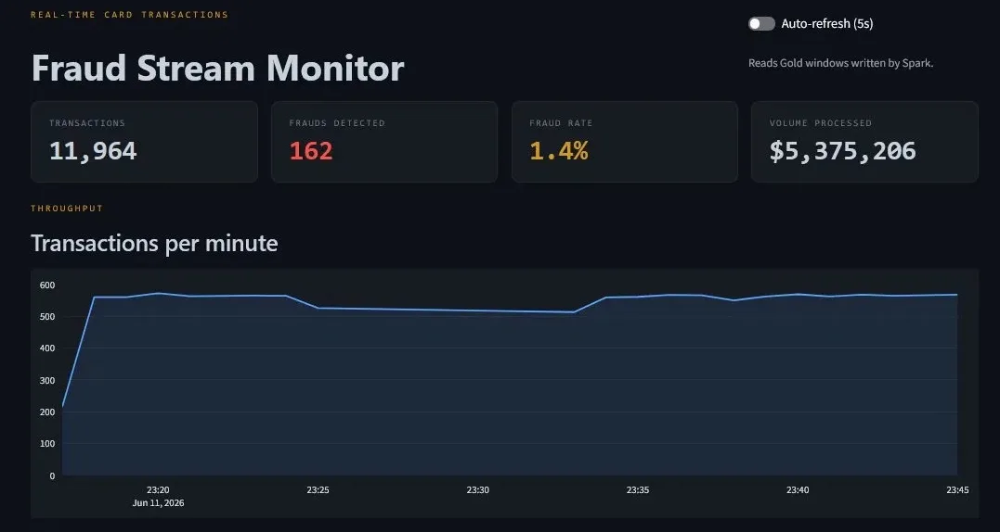

Real-time fraud streaming
A streaming pipeline on Delta Lake that survives a crash without losing or repeating a record, with a schema registry and health checks.
0records lost or duplicated after the job is killed mid-stream and restarted, checked in CI

- Decision it supports
- Spotting a fraud attack within minutes, not in the next day's report.
- Who uses it
- Fraud monitoring and payments operations.
- What an error costs
- Finding an attack a day late means a full day of losses.
- How it creates value
- Each minute becomes a row with counts and fraud by pattern about 2 minutes later; a crashed job loses and duplicates nothing, an incompatible schema is refused, and a stalled stream raises an alert.
- Risks and limits
- One broker and local disk; the public dashboard shows a recorded sample of the stream.
Problem
Card fraud happens in seconds, and its signal is in patterns over time. A nightly batch report sees it a day late.
Solution
Transactions flow from Redpanda through Spark Structured Streaming into Delta Lake tables and a live dashboard, with event-time windows and watermarks. The event schema lives in a schema registry that refuses breaking changes; anything that breaks the contract is quarantined with the reasons. A health check passes or fails the stream and can alert a webhook.
How it works
- Delta sinks with checkpoints: CI kills the job with SIGKILL, restarts it, and finds every Kafka offset in Bronze exactly once.
- Compaction and vacuum run while the stream writes (66 files became 16 with the same rows in CI).
- The registry rejects an incompatible schema in CI; a message sent without it lands in quarantine.
- Progress of every query is logged; the health check fails within two minutes of the job stopping.
Results
| 0 | duplicate or missing offsets after a crash and restart |
| ~2 min | from the end of a minute to its row in Gold |
| 47 | tests, including Spark with Delta on a local session |
Limits
One broker and local disk; alerts go to a webhook, not a paging service. The public dashboard serves a recorded sample.
Stack
Redpanda, Schema Registry, Spark Structured Streaming, Delta Lake, Streamlit